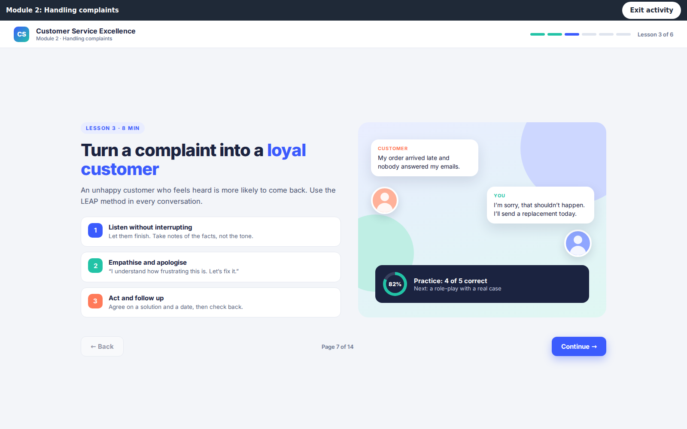
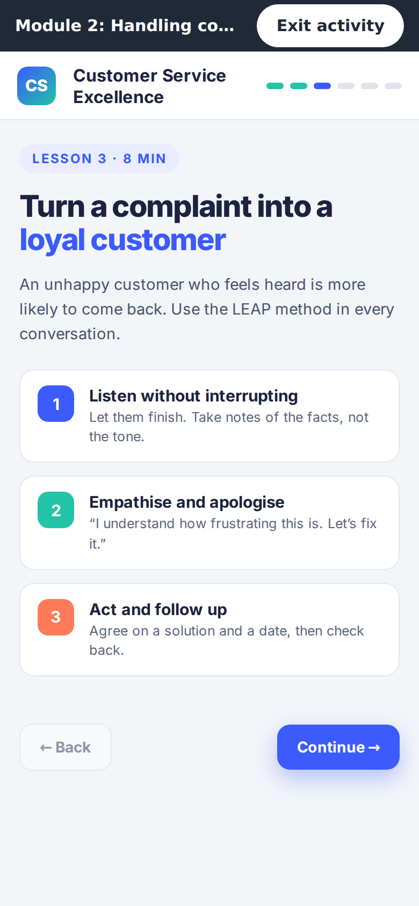
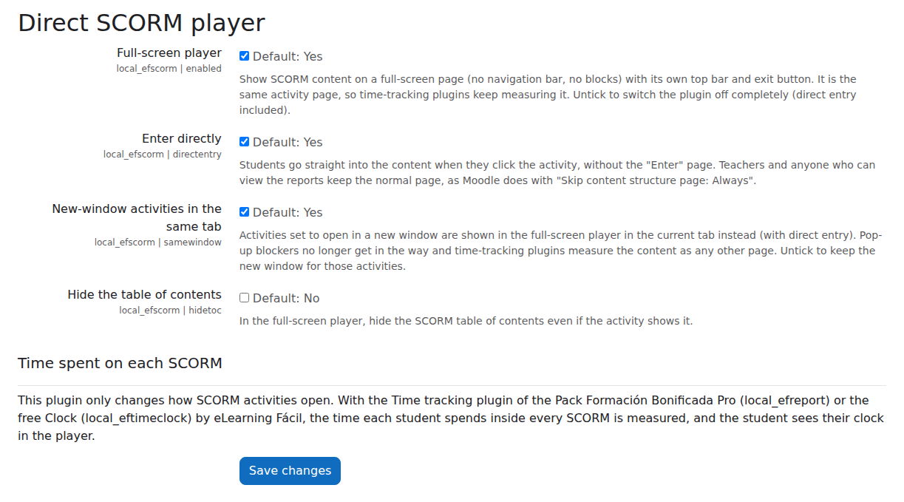

Free plugin for Moodle™
Direct SCORM player
One click and the student is right inside the SCORM.
Plugin guide · local_efscorm
Version 0.2.1 · Works with Moodle™ 5.1, 5.2 and 5.3

Developed and maintained by eLearning Fácil
An independent company that builds plugins for Moodle™ to save time for training providers and
companies: time tracking, reports, certificates and student management.
elearningfacil.com · info@elearningfacil.com
Contents
Table of contents
Guide
The direct player
The student clicks the activity and is straight into the content, full screen, with no new windows.
1What it is and what it is for
Direct SCORM player changes how Moodle™ opens SCORM activities, without touching the SCORM
module or the packages: the student goes straight into the content and sees it across the whole window, with a
top bar and an exit button.
- No “Enter” page: one click on the activity and the content is in front of them.
- Full screen in the same tab: no navigation bar, drawers or theme footer; if the package is larger
than the window, scrollbars appear.
- No new windows: activities set to open “in a new window” also open in the current tab, so pop-up
blockers stop getting in the way.
- Still the activity page: time-tracking plugins (such as the free Active Time Clock) measure it like
any other page and show their clock.
- Works with any Boost-based theme and stores no data.
2Installation
- Back up your site before installing: database, moodledata folder and code. It is good practice with
any plugin, even though this one creates no tables and touches no data.
- Site administration → Plugins → Install plugins: upload the ZIP and confirm.
- Done: it is enabled site-wide by default. Settings are in
Site administration → Plugins → Local plugins → Direct SCORM player.
- Check with a student account that clicking a SCORM goes straight in (teachers still see the normal
activity page, with the reports).
Nothing to set up per activity
You don’t need to change “Skip content structure page” or the display mode of each SCORM: the plugin handles
every activity on the site.
3What the student sees
When they click the activity, the content fills the window under a bar with the activity name and the
Exit activity button, which takes the student back to the course section (and closes and saves the SCORM
as usual).

A neutral top bar (it works with any theme) and the content across the whole window.

On a phone, the same: bar, content and scrolling if the package doesn’t fit.
- The table of contents of multi-part packages is shown or hidden as the activity has it (there is a
setting to always hide it).
- If the activity was set to open “in a new window”, the student still sees it in the current tab (setting
“New-window activities in the same tab”, on by default).
- Teachers and anyone who can view the reports keep the normal activity page, with the “Enter” button
and the report links, just as Moodle™ does.
4Settings
In Site administration → Plugins → Local plugins → Direct SCORM player.

| Setting | Default | What it does |
|---|
| Full-screen player | Yes | Shows the SCORM across the whole window with the top bar and the exit button. When off, the plugin does nothing. |
| Direct entry | Yes | The student enters the content without the “Enter” page. |
| New-window activities in the same tab | Yes | Activities set to open “in a new window” open full screen in the current tab. Untick it to keep the new window for those activities. |
| Hide the table of contents | No | In the player, hides the SCORM table of contents even if the activity shows it. |
5Measuring the time in each SCORM
This plugin only changes how SCORM activities open, and it works the same with nothing else installed. To know
how long each student spends inside each package, eLearning Fácil offers two options, and both show their
clock inside the player:
Active Time Clock (free)
Measures real time in activities (only while the tab is visible and in focus), with a per-course report and
Excel and CSV downloads.
The complete suite
Time you can prove in an audit, percentage of the course hours, per-activity detail, completion by time spent,
communications and the evidence file for each group.
elearningfacil.com
Why the same tab matters
A SCORM in a new window is a window the browser can block and that time trackers don’t always see. In the same
tab, SCORM time is activity time: it is neither lost nor inflated.
6What it changes and what it doesn’t
| Yes | No |
|---|
| Sends the student to Moodle’s own player, as “Skip content structure page: Always” does. |
It doesn’t change the SCORM module, the packages, attempts, grades or reports. |
| Gives the player page the theme’s minimal layout (no navigation bar or blocks) and adds its top bar. |
It opens no windows and uses no overlays on the course: it is the activity page. |
| Installs and uninstalls without leaving a trace: it has no tables and stores no personal data. |
It doesn’t change the settings of any activity. |
Free software (GPL v3), built to the Moodle™ plugin guidelines: no external calls or third-party resources,
a declared privacy provider, automated tests and code review on every release.
7Frequently asked questions
A teacher says it doesn’t go straight in for them
That is expected: anyone who can view the activity reports keeps the entry page, with the “Enter” button and
the report links. To see what the student sees, use Switch role to… → Student.
I want one particular activity to open in a real new window
Untick “New-window activities in the same tab”: every activity set that way opens its window again. It is a
site setting.
The content looks cut off or doesn’t fill the window
The player gives the package the whole window (minus the bar and, if the activity shows them, the table of
contents and the navigation panel) and adds scrollbars if it is larger. If it is still cut off, the size is fixed
by the package itself (the activity width and height only apply to the new window). If your theme had its own CSS
for the SCORM player, remove it: it wins over the plugin’s.
The package’s own “Close” button does nothing
It tries to close a window that doesn’t exist: in the current tab, leave with Exit activity, which closes
and saves the SCORM in the same way.
eLearning Fácil
More plugins by eLearning Fácil
Built for training providers, companies and academies that work with Moodle™.
Want to know more?
Drop us a line and we’ll tell you which one fits your Moodle™.
elearningfacil.com
info@elearningfacil.com · WhatsApp +34 647 002 997
Guide for the local_efscorm plugin · version 0.2.1 · © 2026 eLearning Fácil · elearningfacil.com
Moodle™ is a registered trademark of Moodle Pty Ltd. SCORM® is a registered trademark of Advanced Distributed Learning (ADL). eLearning Fácil is not affiliated with, associated with or endorsed by either; the names are used only to describe compatibility.